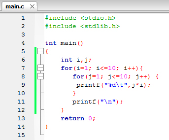
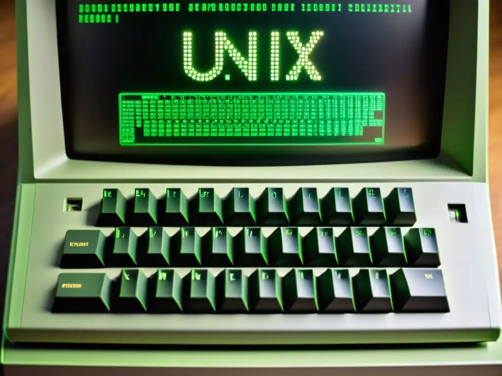
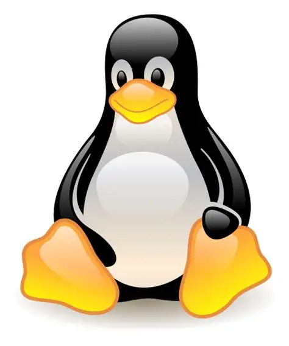
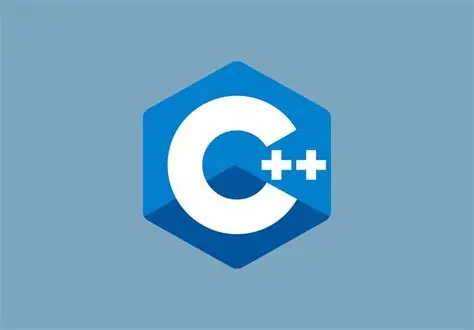
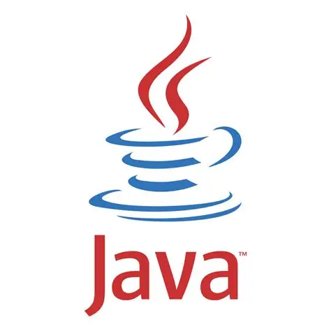

1972 — A linguagem C se torna a fundação da computação moderna
O programador Dennis Ritchie, trabalhando nos laboratórios Bell nos Estados Unidos, criou a linguagem de programação C com um objetivo bem específico: desenvolver o sistema operacional
Unix, um projeto que ele tocava ao lado de Ken Thompson. A funcionalidade que tornou a linguagem C especial era um equilíbrio raro entre dois extremos:controle quase direto sobre o hardware
da máquina, mas legibilidade e portabilidade de uma linguagem moderna.


Mudanças com o surgimento da linguagem C
Geralmente, linguagens fáceis de usar sacrificavam desempenho, e linguagens rápidas eram difíceis de escrever e entender — a linguagem C resolveu esse conflito. Ela dava ao programador
controle quase direto sobre memória e processador, como faziam as linguagens mais antigas e trabalhosas, mas ao mesmo tempo era organizável e podia ser adaptada para rodar em diferentes
tipos de computador com poucas mudanças. Essa combinação rara fez da linguagem C uma escolha natural para construir sistemas operacionais inteiros, e não só programas isolados.


O impacto foi imediato entre engenheiros e cientistas da computação: praticamente todo sistema operacional importante desde então — incluindo partes centrais do Windows, do macOS e do próprio
Linux — tem raízes na linguagem C ou em conceitos que ela consolidou.
C E SUA IMPORTÂNCIA:
a linguagem C se tornou uma espécie de "língua-mãe" da programação moderna: linguagens populares usadas hoje em dia, como C++, Java e até indiretamente o Python, herdaram sua sintaxe
ou sua filosofia, direta ou indiretamente, tornando esse projeto dos laboratórios Bell uma das bases mais duradouras de toda a computação.


